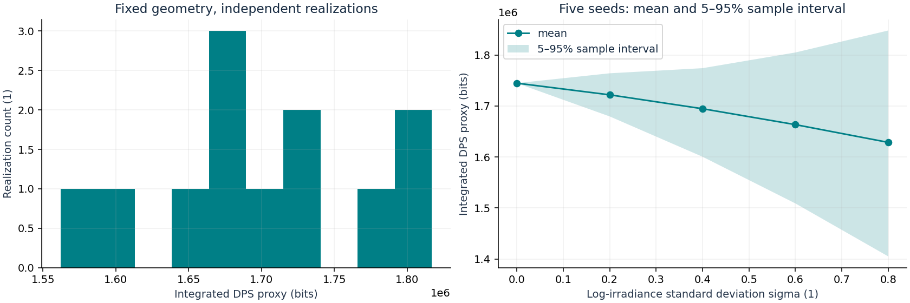
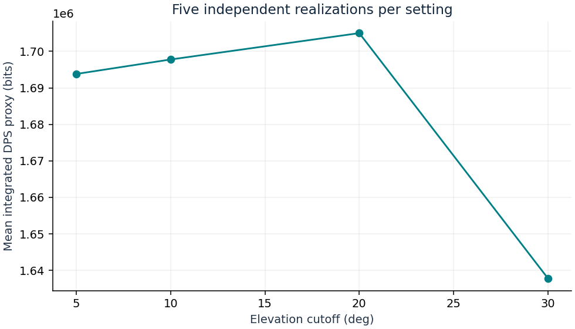

DPS illustrative rate proxy; no composable security bound established
Simulated data. Independent per-edge resources. No certified secret key. Parameters and units: results.json. Ensemble: ensemble.csv.
| mean_qber | 0.04725325721885275 |
| median_qber | 0.027035340888409816 |
| p95_qber | 0.14887713196537974 |
| mean_rate_bps | 4070.455597783806 |
| median_rate_bps | 1342.0186255356462 |
| p05_rate_bps | 0.0 |
| outage_fraction | 0.3192019950124688 |
| pooled_qber | 0.018693817518486856 |
| integrated_rate_bits | 1806234.3036383614 |
| time_outage_fraction | 0.3175 |
| rate_at_mean_efficiency_bps | 3799.778354580093 |
| rate_at_mean_efficiency_scope | single continuously open gate at mean eta; includes unavailable samples in mean eta |



